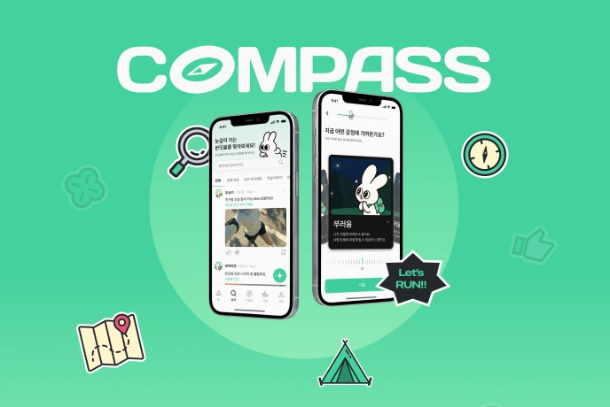

COMPASS
COMPASS
비교를 성장으로 연결하는 서비스를 기획하다.
- 진행 기간
- 2026.07 ~ 2026.12
- 팀 인원
- 6명
- 기획 기여도
- 나중에 다시 채울 예정
- 담당 업무
- 웹 빌딩 · 웹 콘텐츠 공동 기획 · 브랜딩 영역 디자인 재작업
PROBLEM & APPROACH
어떤 문제와 처음 부딪혔을까요?
비교에서 느낀 자극이 행동으로 이어지지 않았습니다.
타인의 일상과 성취를 보며 부러움이나 초조함을 느끼는 일은 자연스럽습니다. 하지만 그 감정에 담긴 욕구를 이해하지 못하면, 막연한 부러움이나 조급함으로 남아 실제 행동으로 이어지기 어렵습니다. COMPASS는 이 사이의 간극에서 출발했습니다.
설문 응답에서 비교를 활용하려는 마음을 발견했습니다.
60명을 대상으로 비교 경험을 조사했습니다. 비교하며 다양한 감정을 느끼지만 행동으로 옮기는 데 어려움을 겪는 응답과 함께, 그 감정을 건강하게 활용해 성장으로 이어가고 싶다는 응답이 있었습니다. 이를 통해 비교를 없애는 것보다, 감정을 이해하고 실천으로 연결하는 데 도움이 필요하다고 판단했습니다.
설문조사 기간 2026.09.06 ~ 09.08 · 응답자 60명 · COMPASS 기획서
나를 발견한 순간이 작은 실천으로 이어지도록 설계했습니다.
다른 사람의 성장 과정 탐색 → 비교 감정과 원하는 모습 발견 → 나에게 맞는 목표·일주일 미션 설정 → 실천과 기록으로 흐름을 연결했습니다. 결과만 비교하는 데서 멈추지 않고, 내가 원하는 모습을 알아보고 자신의 상황에 맞는 행동을 시작하도록 돕는 서비스입니다.
PREVIEW
판단이 화면에 닿는 과정을 봅니다.
서비스 주제
서비스 구조
이용 흐름
프로토타입
PARTICIPATION & REFLECTION
맡은 일과, 다음에 가져갈 배움
내가 맡은 일
- 기획을 실제 웹 경험으로 구현했습니다.
웹사이트 빌딩을 전담해 페이지 구성부터 인터랙션과 움직임 구현까지 맡았습니다. 웹에 담을 내용은 기획 팀원과 함께 구성하고, 이를 실제로 탐색할 수 있는 페이지로 옮겼습니다.
- 브랜딩 영역을 다시 디자인해 적용했습니다.
브랜딩 영역은 기존 디자인을 바탕으로 다시 디자인했습니다. 재작업한 디자인을 웹사이트에 적용하고 구현까지 이어갔습니다.
비교를 바라보는 시야가 넓어졌습니다.
처음에는 비교라고 하면 부정적인 감정이 먼저 떠올랐고, 그 감정 자체를 해소하기는 어렵다고 생각했습니다. 그런데 설문에서 비교 감정을 건강하게 활용해 성장으로 이어가고 싶다는 응답을 보며, 제가 비교를 한쪽으로만 바라보고 있었다는 것을 돌아봤습니다.
누군가를 부러워하는 마음 안에는 내가 원하는 모습이 담겨 있을 수 있었습니다. 비교를 단순히 없애야 할 감정이 아니라, 또 다른 나를 발견하고 성장의 방향을 찾는 계기로 바라보게 됐습니다.
처음의 생각보다 사용자의 응답을 먼저 봅니다.
제게 익숙한 해석만으로 문제의 방향을 정하지 않고, 사용자의 응답이 보여주는 다른 가능성까지 살펴보는 기준을 얻었습니다. 비교 감정을 이해하고 작은 실천으로 연결하는 COMPASS의 방향도 이 관점에서 생각하게 됐습니다.
“저희는 비교가 끝이 아니라,
나를 발견하는 또 다른 시작이 될 수 있다고 생각했습니다.”
2026.11.03 졸업전시 본심사 발표 대본 중
PROCESS
방향이 바뀐 순간을 기록합니다.
2026.11.03 · 졸업전시 본심사
COMPASS 본심사 발표
비교에서 느낀 감정을 이해하고 성장으로 연결하는 COMPASS의 기획 방향을 발표했습니다.
2026.11.03 · 졸업전시 본심사
팀 콘셉트와 함께한 본심사
팀 콘셉트인 ‘산악동호회 아저씨들’에 맞춰 준비한 모습으로 본심사 발표를 마쳤습니다.
2026.11.03 · 졸업전시 본심사
발표 전, 무대 뒤에서
본심사 발표 전 무대 뒤에서 팀원들과 둥글게 모여 손하트를 만든 순간입니다.
NEXT PROJECT